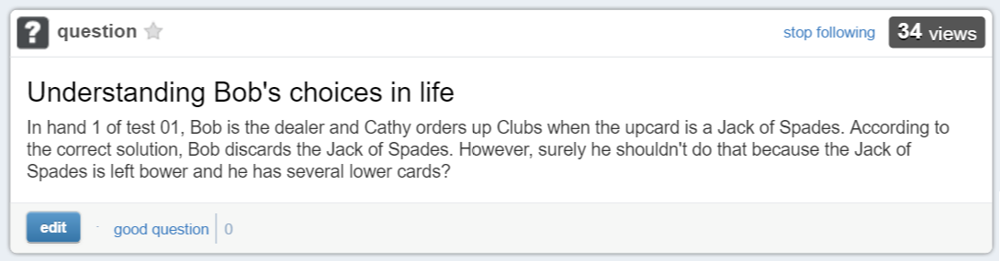

A wrist-worn electrical impedance tomography system that uses a four-electrode array to capture forearm muscle activity and classify micro-gestures in real time. The project spans custom firmware, synchronized data acquisition, signal preprocessing, and a machine-learning pipeline for reliable gesture recognition.

An autonomous drone built on a custom SpeedyBee F405–based flight stack with ArduPilot and a Raspberry Pi vision module. The system uses onboard computer vision for real-time perception and sends MAVLink control commands for fully autonomous navigation and gesture-based interaction.

Carte Diem is a add-on module that integrates smart features to regular carts. This device eliminates the need for checkout lines while maintaining anti-theft features. It’s modularity allows stores to easily implement this technology into the existing ecosystems.

Redesigning the market-leading Incucyte into a next-generation, miniaturized live-cell research platform. The project develops a custom embedded control system with precise thermal, humidity, and airflow regulation to enable reliable long-term cell imaging in a compact form factor, with technical details shared only within NDA constraints.
Turn any flat surface into an interactive touchscreen by combining LiDAR-based position tracking with vibration sensors that classify taps, drags, and other gestures in real time.
Our computer vision research project developed in Python enhances real-time hand tracking and gesture classification using MediaPipe, YOLOv8, and DeepLabCut to support posture correction and performance analysis for musicians.
An advanced content-aware, image resizing program utilizing seam carving algorithm in C++ that allows image to be scaled without losing/distorting meaningful image landmarks.

This project is a natural language processor implemented in C++ for predictive classification using the naive bayes algorithm. The classifier has been tested on large .csv datasets and has demonstrated an accuracy of 87% with O(n) processing time.
Built a RESTful web server and custom doubly linked list in C++ to manage an interactive office hours queue, focusing on dynamic memory, iterators, and real-time client-server communication.